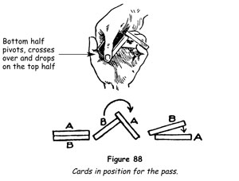
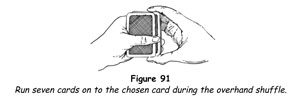

The first exposition of the principles of card magic was published in 1769 by the French writer Guyot, and he it was who first laid down the dictum that mastery of the pass is the first requisite of the art of conjuring with cards. His actual words were, 'Before risking an attempt at these kinds of recreations, you must know how to make the pass.'
All succeeding French writers on the subject followed his lead and insisted that the pass is the first essential. Professor Hoffmann, whose book Modern Magic, published in 1876, was the first scientific treatise on magic in the English language, took most of his material from the French authors and followed their example in this respect. He described the pass as 'the very backbone of card conjuring', and for years this statement was accepted as gospel by all our other writers, who reiterated without exception that, 'without the pass, card magic is impossible'.
The pass is a very difficult sleight to master, and this insistence on its indispensability makes it easy to understand why the would-be card conjurors of the 19th Century, after a prolonged and vain struggle with the intricacies of this sleight, finally decided that conjuring with cards was not for them and decided to try out some easier hobby.
After all, the principal use of the pass is to move a chosen card from the middle of the pack to the top, or vice versa; but it was not until the turn of the century that card conjurors freed themselves of this inhibition and devised easier methods of attaining the same objective.
We have shown in the preceding pages that the pass is not absolutely essential to card conjuring and that any trick can be performed without using it. Anyone who really has the urge to perform good tricks with cards, and to do just that in the shortest possible time and with the simplest possible methods, has been shown how it can be done. The methods that have been given are simple, but always in conjuring the simplest methods are the most effective. By mastering the simple, natural ways of making all necessary moves which we have given you, you will have made great progress in a surprisingly short time.
Although we have relegated the pass to the role of a subsidiary sleight, we do not wish you to think that it is unimportant. When it is done well it is the most important sleight in card magic. However, because it is so difficult to master, it should be the last sleight that the novice should be called upon to learn.
We can think of no good reason why you should not be performing good card magic in the months it will take you to learn to do the pass well, and do not want you to wait until you have learned this difficult sleight - and if you never do learn this sleight you will still be able to perform mystifying, amusing and deceptive tricks of card magic by using the other methods that we have given you; these you will continue to use in any case, even when you have mastered the pass.
The Pass
The Grip
1. Hold the pack, back upwards, in the left hand as for dealing, but with the thumb flat against the left edge of the cards (figure 86).
2. Insert the left little fingertip between the two portions of the pack to be transposed.
3. Place the right hand over the pack, the fingers at the outer end and the thumb at the inner end (figure 87).
Left-hand Action
1. Grip the upper packet firmly, by pressing down upon it with the first phalanx of the left ring finger, thus gripping it firmly between that finger and the little finger. Press the first phalanxes of the index and middle fingers on the top of the pack.
2. Straighten the left hand so that the fingers, between the first and second phalanxes, are parallel to the back of the left hand. The upper packet will be carried to the right between the left little and ring fingers, which continue to grip it firmly.
Right-hand Action
1. Now press upwards against the outer end of the lower portion with the right middle finger, which bends inwards to exert that pressure upwards. This pivots the lower portion between the middle finger and the thumb of the right hand, slanting it upwards to the right, until it moves above the other packet (figure 88). Note particularly that the left thumb remains pressing against the left edge of the packet.

2. Close the left fingers into the palm, carrying the upper packet below the other, where it rests on the left palm.
3. Close the packet originally at the bottom on top of the other portion and square the pack. Do not extend the left forefinger in the action. This is a very common and serious fault.
The classical pass just described requires a cover of some sort, and in general the advice given is never to do it immediately after a card has been returned to the deck or while the eyes of the spectators are fixed on the performer's hands. There are certain covers, however, which allow one to do just that; since they are know to very few, we shall set them forth here. The first and one of the best follows.
Riffle Pass
1. A card having been returned to the deck, preferably somewhere about the middle, and a break having been secured above it with the little finger, square the cards so that the outer end of the deck, visible to the spectators, is perfectly regular.
2. Riffle the outer ends of the cards with the right middle finger, the hands moving slightly upwards and separating in the action. This is the feint.
3. Bring the right hand over the deck to repeat the riffle; the moment the hands begin to move upwards, make the pass and immediately riffle the ends of the original lower packet, which is still held between the right middle finger and thumb, the cards falling upon the original upper packet, now at the bottom.
4. Finally, riffle the whole deck and square up.
Smoothly done, the transfer of the upper packet to the bottom appears to be a part of the riffle.
Spread Pass
Make the pass in the usual way, but, as soon as the upper part of the deck has been transferred to the bottom, spread the cards of that packet with the left thumb on the fingers of the left hand, stretched out flat for their support. At the same time make a short quick remark, such as, 'You see your card remains in the middle of the deck!' Close the spread smartly and execute an overhand shuffle, controlling the cards as may be necessary.
A slight swing of the hands from left to right will help to make it appear that the spreading of the cards is all that has taken place.
Spring Pass
The idea behind this cover is the same as that in the riffle pass - the distraction of the attention of the spectators by a secondary artifice.
1. With the pack held flat in the left hand and the left little finger holding a break above the chosen card, with your right hand lift the greater part of the cards above the break between the tips of the thumb and middle finger at the ends and spring them on to the cards in the left hand (figure 89).
2. Square the deck and repeat the same action.
3. Square the cards again, make the pass, and immediately lift the packet now held between the right thumb and middle finger and spring these cards on to the cards in the left hand.
Correctly executed, the pass is quite invisible. The spectators have become used to the fall of the cards into the left hand, and this manoeuvre covers the actual movement of the pass.
TRICKS WITH THE PASS
Off Agin, On Agin, Finnegin!
When the student has progressed to the point of making the transposition of the two packets fairly smoothly, the following feat will afford excellent practice.
A spectator shuffles the deck, which is then placed on the magician's left hand. The magician cuts at any point indicated by the spectator, and the spectator removes the top card of the lower packet, notes what it is and replaces it. By simply tapping the back of the card with the packet he holds, the magician causes the noted card to vanish and the spectator verifies the fact by examining the packet. The cards are replaced on the magician's left hand and he taps it once more making the missing card reappear.
1. Have a spectator shuffle the pack and then place it face downwards on your left hand.
2. Have him indicate the point at which he wishes you to and lift off the cut, taking the cards between your right thumb and middle fingers. Invite him to lift off the top card of the remainder, note it and replace it.
3. Announce that by merely tapping the back of that card with the other packet you will make it vanish. Strike downwards with your right hand, so that the packet it holds will hit the top card of the left-hand packet near the edge of its right-hand side, and count 'One!'
4. Repeat the blow, but this time press the tips of the left fingers against the top card of the packet in the right hand and backslip the card on to the lower packet as the right hand moves smartly upwards. Thus the backslipped card is instantly and imperceptibly folded on to the back of the top card of the lower packet, the noted card. Count 'Two!' and rapidly repeat the blow with your right hand, counting 'Three! Off agin, Finnegin!'
5. 'Would you believe it?' you say, 'your Finnegin card has vanished. Look!' The spectator removes the card on the top of your left-hand packet; the moment his eyes travel to its face, make the pass, but retain your grip of the lower packet with your right thumb and forefinger and carry it away, leaving the original top half of the deck lying on your left hand. All eyes will be on the card the spectator removes, and by the time they are looking at your hands you have the chosen card snugly on top of the packet in your right hand.
6. 'Your Finnegin card has vanished completely, as you can see.' Holding the packet upright, spread the top cards with your left thumb; or you may allow the spectator to take the packet and run through the cards.
7. Square the packet on your left hand as before. Repeat exactly the same actions as in steps 3 and 4, counting and saying, 'On agin, Finnegin!' Have the card named and have the spectator turn it face upwards himself.
Note that, when a spectator removes the added card, your hands should be close together, but, immediately the pass is made, move the right hand away a foot or more.
Kangaroo Card
Magicians refer to tricks that are quickly performed and have a strong element of novelty as 'quick tricks'. Here is such a feat which can be performed anywhere that a man's felt hat is available. These days you cannot be sure that such an item will be found amongst your audience, so it is as well to have one of your own to hand and to present it to the audience for inspection before you start the trick.
1. Have a card selected and returned to the deck, forming a break above it as described under the spread and break.
2. Ask, 'Who has a felt hat?' at the same time riffling the cards; then make the riffle pass, immediately afterwards executing an overhand shuffle and retaining the chosen card at the top.
3. Take the hat proffered to you. If it does not have a lengthways crease in the crown, put one in it. Place the pack in the hat and, the moment your hand is out of sight of the spectators, push the top card into the pocket at one side of the crease and drop the pack into the pocket on the other side (figure 90).
4. Ask a spectator to assist you and have him hold the hat by the brim above the level of his eyes.
5. 'I call this the kangaroo card trick,' you explain, 'because some of the cards jump like kangaroos.' Snap the crown of the hat with your index finger at the side that contains the chosen card (figure 90), making it fly up out of the hat very much like a startled kangaroo.
Righting a Wrong
This is one of those feats - so dear to the hearts of all audiences and all magicians - in which the mystifier himself apparently becomes the mystified. He fails but in the end turns the tables in a striking fashion. Nothing pleases an audience more than to catch the infallible wizard in an apparent failure. They enjoy his discomfiture for the moment, then are amazed and intrigued when he emerges triumphant.
1. Have the pack shuffled, take it back and have any card removed and noted.
2. Have the card replaced and pass it to the top.
3. Shuffle overhand, running seven cards above the chosen card, which becomes the eighth card from the top (figure 91).

4. Invite the spectator to name his card, which let us say is the ace of hearts, and instantly say, 'Eight cards down!'
5. Deal seven cards and prepare for a double lift, as you say, 'Will you name your card again?' Turn over the two cards and show an indifferent card, which let us call the nine of clubs.
6. Appear disconcerted by your failure and turn the two cards face downwards as one. Remove the top card - the spectator's ace of hearts - and toss it face downwards on the table to one side. 'Let's get rid of that nine of clubs,' you say grimly. 'Don't worry. I'll find your card, if it takes all night.'
7. Shuffle overhand, running seven cards above the top card as in step 3. The nine of clubs, which is supposed by the audience to be on the table, is now eighth from the top.
8. Weigh the cards in your hand, as if making a calculation, and say in a puzzled tone, 'That's very curious. I still get a vibration of eight. Perhaps your card is at eight this time.'
9. Deal seven cards and say, 'This card could be any card - except, of course, the nine of clubs, which is on the table - but my vibrations tell me that it is your card.'
10. Turn the eighth card and show that it is the nine of clubs. 'Curiouser and curiouser,' you say. 'This can't be the nine of clubs. I put it on the table. Unless ...!' Turn over the table card and show that it is the spectator's ace of hearts.
Blindfolded Pack
Matter through matter has been a favourite subject for the stage illusionist. The same effect is had in this trick employing a pack of playing cards and a borrowed handkerchief. It was an especial favourite with the late Nate Leipzig.
Before you begin, you will need a small quantity of magician's wax, available from any magic supplies shop. Work a small pellet until it is tacky and affix it to one of the buttons on your left sleeve, where it is readily accessible. You will also need an opaque linen handkerchief.
1. Take a shuffled pack; have a card removed and noted by all. Have it replaced in the pack and secure a left little finger break above it as described under the spread and break. Glance about you and ask for the loan of a handkerchief. Make the pass, bringing the chosen card to the top as you advance to accept a proffered handkerchief. If it does not appear to be opaque, say, 'On second thoughts, I'll use my own,' and remove it from your pocket.
2. Hold the pack in your left hand and draw back the left sleeve a little with the right hand, grasping it at the wrist and securing the pellet of wax on the right second finger. As you do this say, 'Let's find a good place to do this trick. The floor is probably best.' If this is not feasible, move towards a nearby table. In either case fix the wax to the back of a chosen card near the middle of the card.
3. Let us say that you sit cross-legged on the floor. Still holding the pack in your left hand, show the handkerchief on both sides. Drape it over the pack and in arranging it press down on the wax through the cloth, which will make the card adhere firmly to the fabric. Place the pack on the floor before you (figure 92, step 1), with the handkerchief centred over the pack. Corner 1 is nearest you.
4. Fold corner 1 towards corner 2. As you do this and the following arrangement, say, 'I used to do a trick in which I was blindfolded and found the chosen card, but this became tiring. Now I do the trick the easy way. I blindfold the pack instead.'
5. Grasp both layers of the handkerchief at the points marked A-A (step 2). Lift the handkerchief and the card, which adheres to it, upwards between the thumb and middle fingers of each hand, and corners 1 and 2 will fold downwards over the chosen card on the side away from you, concealing it from the audience (step 3).
6. Place the folded handkerchief on the pack (step 4), with the hidden card directly over the pack.
7. Using both hands, place the thumbs at B-B and the fingers at C-C (step 5), and fold the cloth over inwards towards yourself once. Replace the folded handkerchief over the pack.
8. Draw corner 1 from under the folded handkerchief on the side away from you (step 6).
9. 'In this trick I don't tell you the name of your card. The pack itself, even though blindfolded, will reveal your card.' Grasp corners 1 and 2 and pull them in opposite directions. The handkerchief unfolds and the card seems to melt through the fabric to appear face upwards (step 7). 'You see? Your card has popped straight up through the handkerchief. A very clever pack, don't you think?'
The folding of the handkerchief, once learned, is done in seconds.
Double Speller
A trick that can be performed in a minute or two - and one that has strong elements of surprise - is valuable for the early part of an impromptu performance. The following is an excellent feat of this type, both in technique and effect.
1. Have a card drawn, noted by all and replaced in the pack, securing a little finger break above it by means of the spread and break. Make the pass, bringing the card to the top, as you say, 'Everything in nature is vibration. Since this is so, cards also vibrate, and to find your card I have only to measure the vibration of each card.'
2. Place the pack to your left ear, ruffle the cards and say, 'Hmmm' in a thoughtful tone. Shuffle the cards overhand, placing one card above the spectator's card so that it is second from the top.
3. Again ruffle the cards at your ear, saying, 'I think I have it. A very definite plus-nine vibration.' Push the two cards at the top of the pack to the right a little with the left thumb. Grasp the top card, an indifferent one, and turn it face upwards on the pack. In squaring the cards, slip the tip of the left little finger under the second card in preparation for a double lift.
4. 'Your card?' you enquire. Receiving a negative response, say apologetically, 'Of course, I didn't really think it was. The cards don't really vibrate you know.' Grasp the two cards above the little finger break at the ends near the right corners, and perform the double-lift card reversal, second method.
5. Square the pack and the chosen card is reversed at the top; that is to say, it is the lowermost card as you hold the deck face upwards in the left hand. Explain your action in turning the pack by saying hopefully, 'I know it isn't the bottom card, either - but, on the other hand, it might be. Is it?' The spectator naturally says that it isn't.
6. Look a little woebegone, cluck a little and then brighten. 'I'll find it another way!' Rap the pack on the table as if to square it, with the faces of the cards towards the spectator, at the same time glimpsing the reversed card at the top, which will be facing you. Let us say it is the ace of hearts.
7. Hold the pack face upwards in your left hand, and thumb through the cards as if in search of the proper one. Actually, push one card into the right hand for each letter of the name of the card you just glimpsed - a-c-e o-f h-e-a-r-t-s, taking them one under the other and not reversing them. Place these cards at the top of the pack, that is to say, underneath the reversed card.
8. Note the card now at the face of the pack - say the four of spades - and push one card into the right hand for each letter in its name as in step 7, transferring these cards to the top
as before.
9. Turn the pack face downwards, saying, 'Just as I thought. A very difficult trick, but I have succeeded at last. I give the pack a tiny shake and your card rises to a new position in the pack, which enables me to do this.' Deal one card for each letter as you spell aloud the name of the second card - f-o-u-r o-f s-p-a-d-e-s - and turn up the last card, showing the four of spades. 'There you are - the four of spades!'
10. Seem very happy about the trick and act as though you had finished. Someone will be sure to tell you that you haven't found the correct card. 'Not the correct card?' you exclaim. 'Why, I was positive - ah, now I remember! This trick won't work for a magician. You should do the spelling!'
Hand him the pack and have him deal one card for each letter in the name of the card, in this case the ace of hearts. When he completes the deal, his card lies face upwards on the pack, staring him in the face.